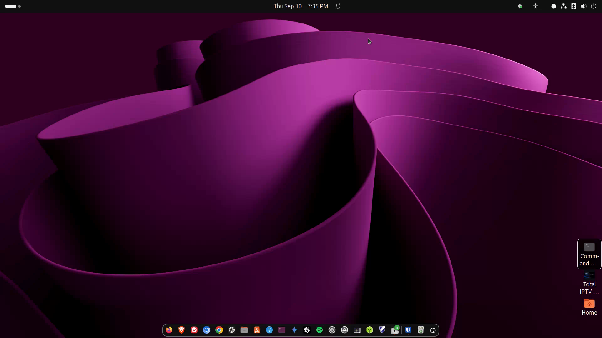

Desktop tour
Activities, the dock, the top bar, and Settings — your GNOME map.

media/images/02-desktop.png with a GTR capture when ready.


Steps
- Press the Super key (Windows key) or click Activities (top-left) to open the overview. Type an app name to search and launch it.
- The dock on the left shows favorites and open apps. Right-click an icon → Add to Favorites to pin it.
- The top bar has the clock (center or left depending on version), and the system menu on the right: Wi‑Fi, Bluetooth, sound, battery, power.
- Open Settings from the system menu or by searching “Settings” in Activities. Explore Displays, Wi‑Fi, Appearance, and Users — change one thing at a time.
Activities overview
This is your Start-menu-plus-Task-View hybrid. Drag windows between workspaces (virtual desktops) along the right edge if you like a clean screen.
Dock tips
- Middle-click (or right-click → New Window) often opens another window of the same app.
- You can move the dock to the bottom in Settings → Ubuntu Desktop / Appearance (wording varies slightly by Ubuntu version).
Windows habit Alt+Tab still switches windows. Super+Tab or Super+` can cycle apps too. See Lesson 7 for more shortcuts.